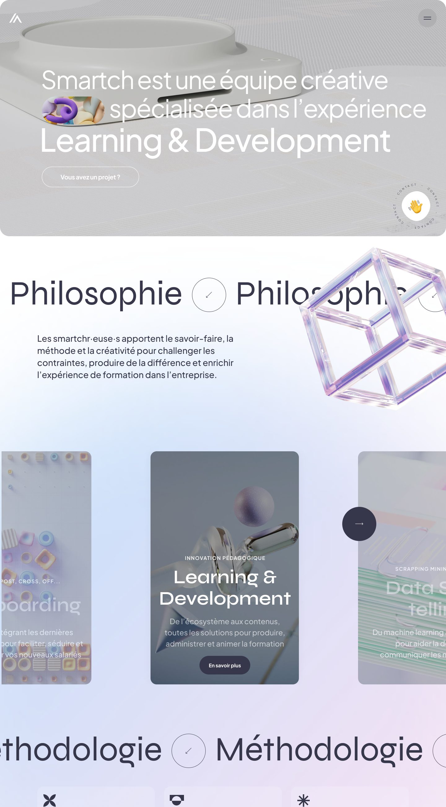
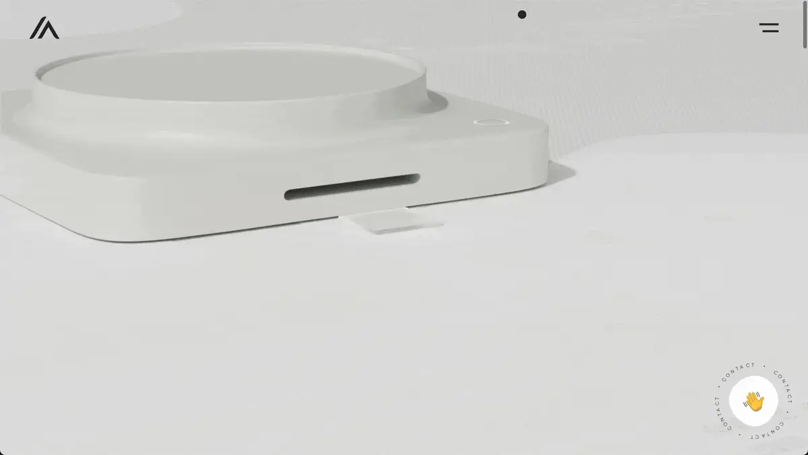
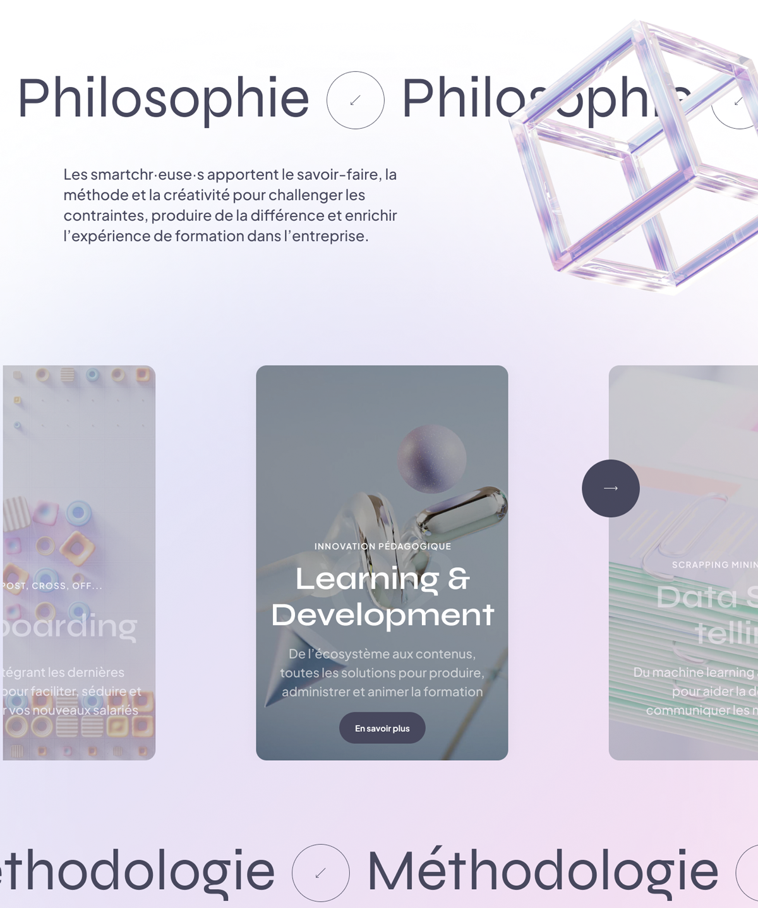
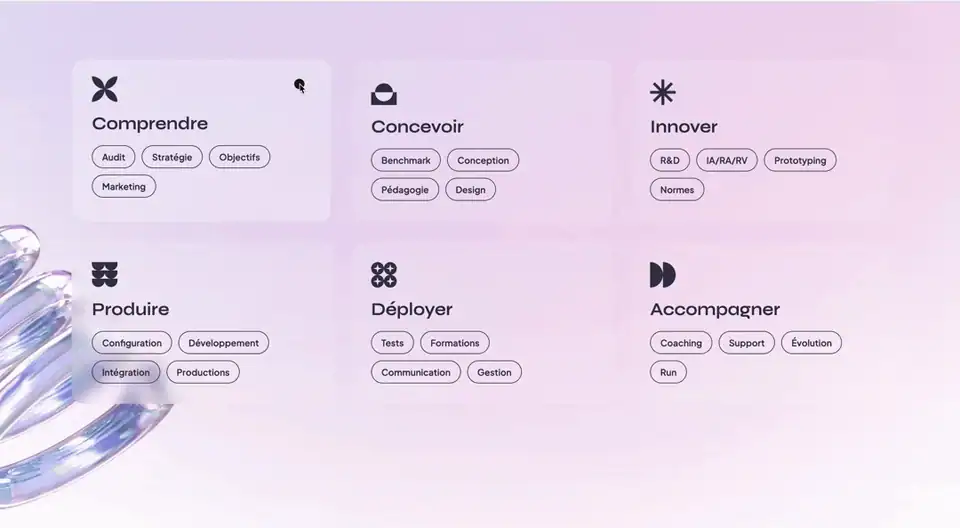
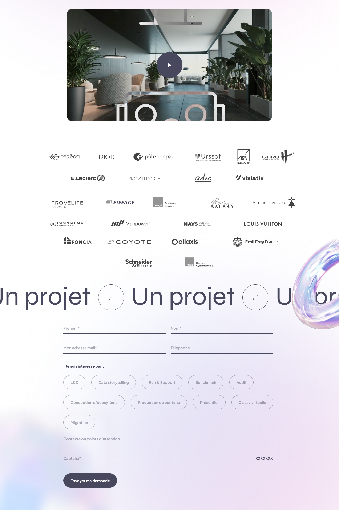
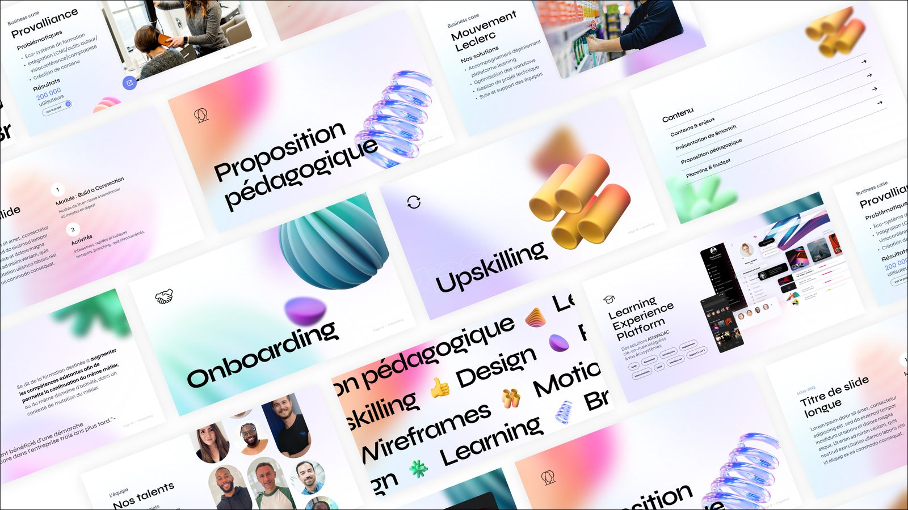
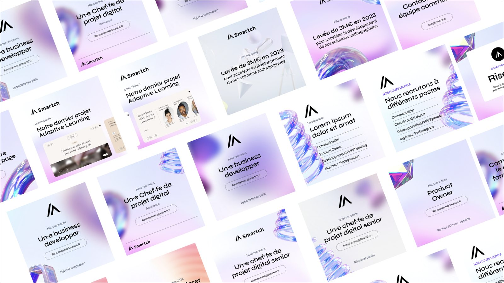

Repenser l'architecture de l'information du site vitrine et créer un Brand System global (Web, Présentations, Social Media) garantissant la cohérence de la marque, tout en optimisant la conversion via un design d'interaction pointu.
Smartch
Product Designer Senior
(UX, UI, Brand System)
Site vitrine B2B
Brand System
Learning & Formation digitale
Smartch, une agence spécialisée dans le learning et la formation digitale.
Moderniser l'identité visuelle de l'agence et clarifier l'offre sur le site vitrine.
Au-delà du site web, l'agence souffrait d'une fragmentation visuelle sur ses autres points de contact (propositions commerciales, réseaux sociaux). De plus, l'ancienne interface web manquait de dynamisme et peinait à guider l'utilisateur vers la prise de contact (génération de leads).
L'intervention a débuté par la restructuration du cœur de l'écosystème : le site web, en alliant rigueur architecturale et fluidité interactive.
Réorganisation complète de l'arborescence et des parcours utilisateurs. L'objectif était de passer d'un site "plaquette" complexe à une architecture de page claire, orientée sur la lisibilité des offres.

Les micro-animations ont été pensées non pas comme des embellissements esthétiques, mais comme des leviers d'utilisabilité et de conversion.
Animation séquentielle des icônes de méthodologie et du slider de compétences pour orienter le sens de lecture et révéler l'information de manière fluide, réduisant ainsi la charge cognitive.
Création d'un effet de survol magnétique sur les labels de sélection du formulaire. Ce feedback tactile virtuel réduit la friction perçue et encourage l'interaction.
Mise en place d'une ancre persistante (sticky) discrètement animée en bas à droite de l'écran, servant de raccourci permanent vers le formulaire de contact sans interrompre l'exploration de la page.




Spécification stricte des animations (courbes de vélocité/easing, durées de transition, comportements au scroll) en collaboration étroite avec l'équipe de développement front-end pour garantir une exécution performante et sans latence.
Pour éviter que cette nouvelle charte graphique ne se dégrade avec le temps, elle a été pensée comme un système modulaire applicable au-delà du produit web.
Traduction des Design Tokens du site web vers un système de gabarits de présentation. Création d'une librairie de slides modulaires (titres, présentation d'équipe, business cases, plannings) réutilisant les mêmes codes visuels.


Déclinaison du système pour les réseaux sociaux via des grilles standardisées. Les composants ont été pensés pour absorber différents volumes de texte de manière élégante.
Le motion design (interactions magnétiques, ancre persistante) a été pensé pour rendre le parcours plus organique et guider vers le formulaire de contact. Chaque animation répond à une intention précise : signaler un état, guider le regard ou confirmer une action.
Les templates stricts permettent aux équipes commerciales de composer leurs présentations à partir de gabarits, et à l'équipe marketing d'animer les réseaux sociaux avec les mêmes codes visuels.
Le système vise une expérience continue pour le client final : de la découverte sur LinkedIn à l'exploration du site web, jusqu'à la réception de la proposition commerciale.